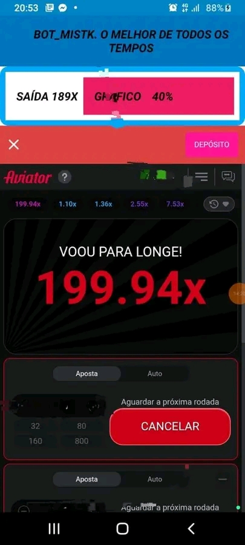
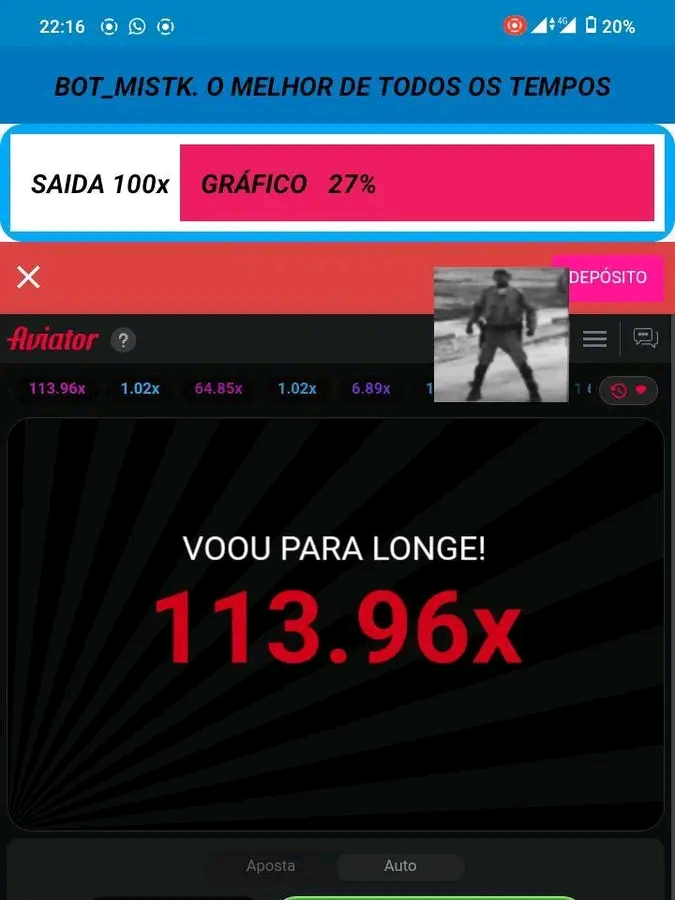
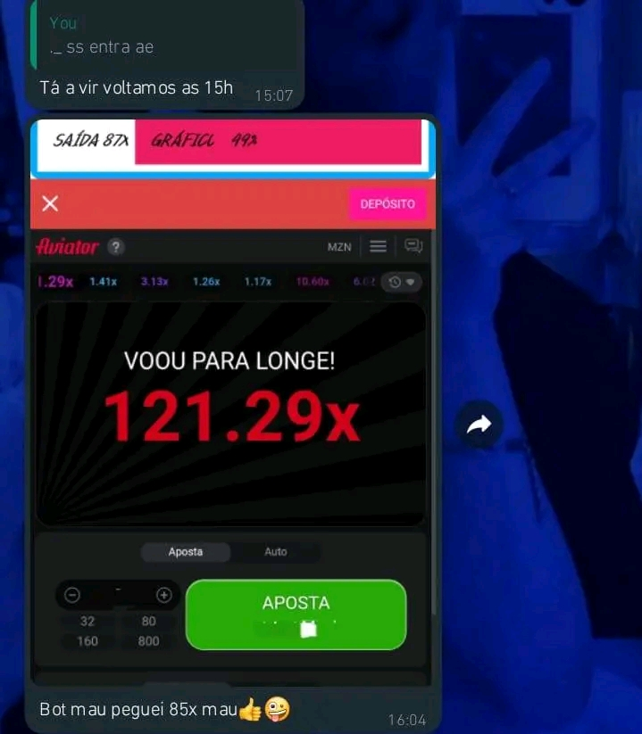

SOBRE O BOT MISTK
O BOT MISTK ? um dos melhores bots existentes em Mo?ambique,ele n?o funciona 24/24 mais ele garante os seus ganhos,porem a forma de usar o bot ? que tr?s o sucesso para o usu?rio, isto ?, quanto maior ou quanto mais for o seu conhecimento sobre o bot maior sera o seu ganho usando ele. Veja uma foto que demostra a capacidade do bot a baixo ?



DICAS DO BOT MISTK
SEMPRE QUE ENTRARES NO BOT VERIFIQUE OS SINAIS GERADOS PELO BOT, SE O BOT ESTIVER GERANDO BONS SINAIS ISSO ? PQ PODES ENTRAR DO CONTRARIO AGUARDE...
VERIFIQUE A PERCENTAGEM DO GR?FICO , SE A PERCENTAGEM FOR ABAIXO DOS 50% FA?A APOSTAS B?SICAS DO CONTRARIO APOSTE NORMALMENTE
ARISCAR USANDO O BOT ? ALGO NORMAL POIS O BOT DIS ONDE O AVI?O PASSARA, COM ISSO O BOT ATUALIZARA UM NOVO SINAL NA MESMA RONDA